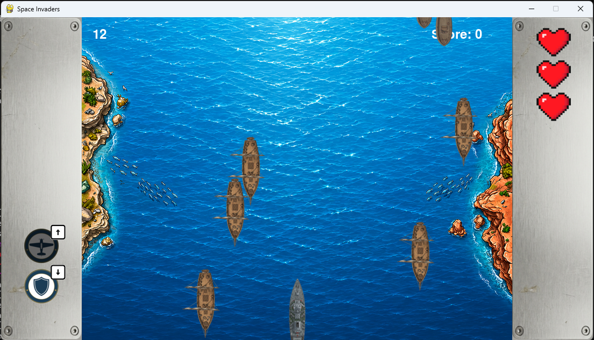
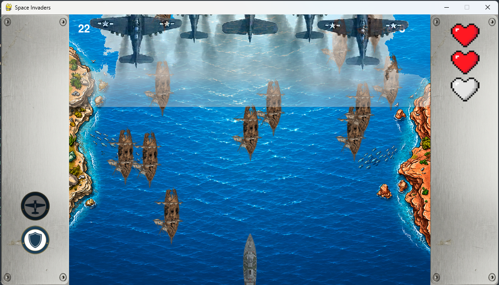

Sea Raiders est un projet personnel développé en Python avec la librairie Pygame. C'est un jeu du genre Space Invaders, le joueur contrôle un bateau de guerre qui doit repousser des vagues d'ennemis envahissant depuis le haut de l'écran.
Il existe deux types d'ennemis : les barques (lentes et fragiles) et les frégates qui sont plus résistantes et plus rapides. Chaque type réagit différemment aux capacités du joueur, ce qui force à adapter sa stratégie au fil de la partie.
En accumulant des points en tuant des ennemis, le joueur charge une jauge qui lui permet de lancer une flotte d'avions qui traverse l'écran. Les barques sont détruites instantanément, tandis que les frégates sont ralenties et affaiblies par le passage de la flotte.

Un second gadget permet d'activer temporairement un bouclier autour du bateau. Il absorbe une collision avec un ennemi avant de se désactiver, offrant une seconde chance au joueur dans les moments critiques.
Le jeu est entièrement configurable via un fichier config.json : vitesse des ennemis, taux de spawn, recharge des capacités. Ce qui permet d'ajuster la difficulté sans toucher au code. La logique du jeu est séparée en deux fichiers : space.py contient toutes les classes (joueur, ennemis, balles, gadgets) et main.py gère la boucle principale et les états du jeu.
J'ai créé ce jeu quand j'étais au lycée, avant ma formation en BUT Informatique. En le relisant aujourd'hui, je vois clairement ce que je ferais différemment.
D'abord la séparation des fichiers, sur ce projet tout tient en deux fichiers (main.py et space.py). C'est beaucoup trop peu. Aujourd'hui je découperais le projet en plusieurs modules : un pour les ennemis, un pour le joueur, un pour les effets, etc. Ce qui rendrait le code bien plus lisible et maintenable.
Ensuite l'exploitation de la POO. À l'époque je savais créer des classes, mais je ne maîtrisais pas l'héritage. Aujourd'hui j'aurais créé une classe abstraite Entite regroupant les attributs communs à tous les objets du jeu comme la position, l'image et la hitbox dont auraient hérité les classes Joueur, Ennemi, Balle etc. Ça aurait évité beaucoup de répétitions et rendu le code plus élégant.
Ce projet reste un bon souvenir, mais il illustre bien la progression entre coder par intuition au lycée et structurer proprement un projet après une vraie formation.